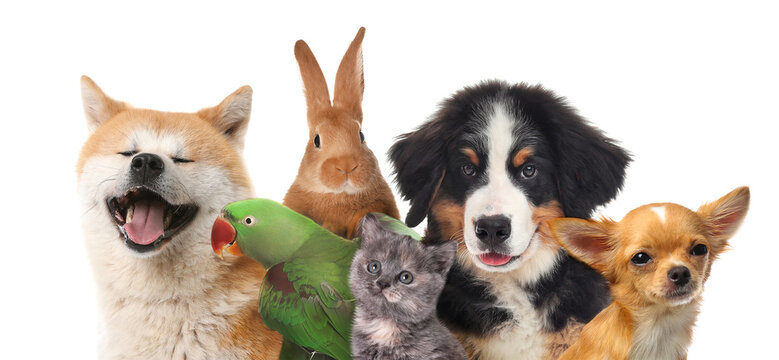

Animais de estimação: sua melhor companhia
Escolher um animal de estimação para sua via é uma das decisões mais importantes que você faz em sua vida. Quando decidimos nós já temos em mente se será gato ou cachorro e até a raça que temos mais afinidades. Mas é importante considerar cuidadosamente o tamanho, o temperamento e as necessidades de cuidados de um animal antes de decidir qual é o pet ideal para você e seu estilo de vida. Nós vamos te ajudar com algumas dicas e espero ajudar em sua decisão.
Os gatos domésticos são felinos carnívoros da família Felidae. Assim como outros felinos, esses mamíferos são caracterizados por corpos flexíveis e baixos, cabeças finas, caudas longas, dentes e garras afiadas.